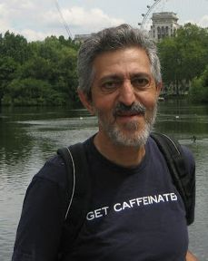

Avi Wigderson | |
|---|---|
אבי ויגדרזון | |
 Wigderson in 2012 | |
| Born | 9 September 1956 Haifa, Israel |
| Education | Israel Institute of Technology (BS) Princeton University (MS, PhD) |
| Known for | Zig-zag product, Computational complexity |
| Awards | Nevanlinna Prize (1994) Gödel Prize (2009) Knuth Prize (2019) Abel Prize (2021) Turing Award (2023) |
| Scientific career | |
| Fields | Theoretical computer science |
| Institutions | Institute for Advanced Study |
| Thesis | Studies in Computational Complexity (1983) |
| Richard Lipton | |
Doctoral students | Dorit Aharonov Ran Raz Eli Ben-Sasson |
Avi Wigderson (Hebrew: אבי ויגדרזון; born 9 September 1956[1]) is an Israeli computer scientist and mathematician. He is the Herbert H. Maass Professor in the school of mathematics at the Institute for Advanced Study in Princeton, New Jersey, United States of America.[2] His research interests include complexity theory, parallel algorithms, graph theory, cryptography, and distributed computing.[3] Wigderson received the Abel Prize in 2021 for his work in theoretical computer science.[4] He also received the 2023 Turing Award for his contributions to the understanding of randomness in the theory of computation.[5][6]
Avi Wigderson was born in Haifa, Israel, to Holocaust survivors.[7] Wigderson is a graduate of the Hebrew Reali School in Haifa. He began his undergraduate studies at the Technion in 1977 in Haifa, graduating in 1980.[8] In the Technion he met his wife Edna.[8] He went on to graduate study at Princeton University, where he received his Ph.D. in computer science in 1983 after completing a doctoral dissertation, titled "Studies in computational complexity", under the supervision of Richard Lipton.[9][10] He is credited with significantly expanding the field of computational complexity.[8]
After short-term positions at the University of California, Berkeley, the IBM Almaden Research Center in San Jose, California, and the Mathematical Sciences Research Institute in Berkeley, he returned to Israel and joined the faculty of the Hebrew University in 1986. He received tenure in 1987 and became a full professor in 1991.[8] In 1999 he also took a position at the Institute for Advanced Study, and in 2003 he gave up his Hebrew University position to take up full-time residence at the IAS.[3]
Wigderson investigated computational questions and specifically the role of randomness in the field. Together with Noam Nisan and Russell Impagliazzo, Wigderson discovered that for algorithms that solve problems through coin flipping, there exists an algorithm that is almost as fast that does not use coin flipping as long as presets are met.[8]
Wigderson developed the Zig Zag product together with Omer Reingold and Salil Vadhan. The Zig Zag product links complexity theory, graph theory and group theory; for example, it can help one understand how to get out of a maze.[8] Today complexity theory is used in cryptography.[8]
Working with Silvio Micali and Oded Goldreich, Wigderson demonstrated that zero-knowledge proofs can be utilized in proving public results on secret data in secret.[8]
Wigderson's son, Yuval Wigderson, is a professor of mathematics at the Institute of Science and Technology Austria.[11]
_Cropped.jpg){kind=link}